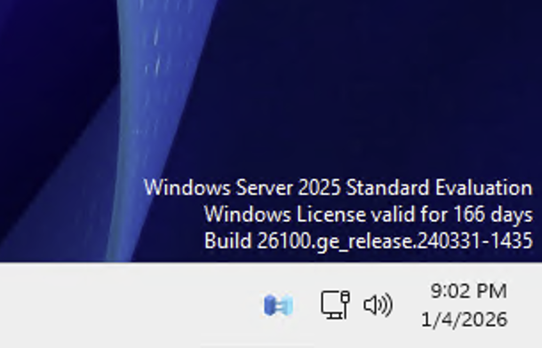

KC DIGITAL
KC DIGITAL
My Projects
Hands-on technical projects showcasing skills in networking, containerization, system monitoring, and more.

Pi-hole Ad Blocker
Network-wide ad blocking using Pi-hole on a Raspberry Pi. Blocks ads and trackers at the DNS level, improving privacy for all devices on the network.

Portainer Container Mgmt
Docker container orchestration using Portainer. Enables easy deployment, monitoring, and scaling of containerized applications in a home lab environment.

System Stats Dashboard
Custom dashboard displaying real-time system statistics — CPU, memory, network traffic, and storage. Built with monitoring tools to track server performance.

Services Dashboard
Custom dashboard built to monitor and manage self-hosted services from a single interface. Provides quick access, status visibility, and organization across all running services in the home lab.

Windows Server 2025
Full Windows Server 2025 deployment for SD Hauling & Demo. Set up Active Directory, user accounts, group policies, and remote desktop access for business operations.

Janny's Lenceria — React App
Full e-commerce application built with React and Redux. Features product catalog, cart management, and checkout flow. Bilingual English/Spanish UI deployed for a real client.